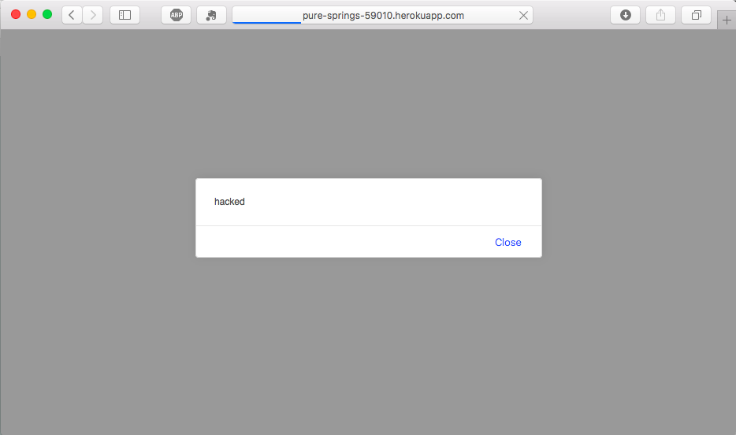
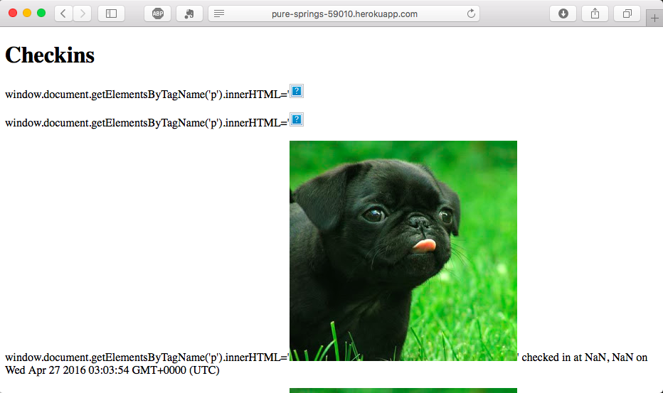

Security Assessment of Landmarks
Introduction
In this assessment I test the security of The Server and Client Side Web Application for Historic Landmarks, Assignment 2 and 3,
which create a database and rendering of the nearest historical landmark within a mile of a given user. While the web application
does currently function properly, it contains a number of issues in its security that could compromise its function.
In this assessment, I will outline these security issues, as well as the methods I used to locate them, and the details and locations
of the specific issues. Thereafter, I will provide recommendations for improving these security measures.
Methodology
I first used the "black-box" method of testing, where I did not look through her code to find issues, but rather tested the site on the
user side to locate any vulnerabilities, posting logins and manipulating the URL query strings.
I then utilized the "white-box" method of testing, wherein I traced through her code to locate any specific issues and security bugs,
to see where she might fix the issues found through black-box testing.
Abstract of Findings
One issue was with cross-site scripting when sending locations to the server. The application does not remove
the ability for data to be interpreted as code, which means that one can send script in as data, and alter
the function and look of the website. This issue was found through black box testing.
Also using the black-box method, I tried entering /checkins.json?login[$ne]=abc in her URL, to see if it would return
all of her logins (that weren't "abc"), which it indeed did. This is a request injection attack, which leads to obvious
privacy issues, as you can get access to all the logins on the web application.
Another issue was that I was able to insert HTML into the site through a curl login entry. This is similar to the
first cross site scripting issue, in that the application does not check for code/ non-alphanumeric login information.
Issues Found
Cross Site Scripting (entering an alert) - high risk
To locate this issue, I used curl, sending locations with a script tag with an alert message to see if it would pop up when I opened the heroku app
(which I was added as a collaborator to).

This is an issue because the application does not prevent the user input from being read in as javascript, thus altering the site
and creating this popup window. This is of high risk because it could completely compromise the functionality of the site. She should
sanitize the input or change < to "& lt;"" and > to "& gt;". To code this, in the portion of her code where she receives the input
she could set the input to unsafe_string, then create a new variable safe_string, and set that to
unsafe_str.replace(/&/g, "&").replace(//g, ">");
And then send the safe string.
Request Injection Attack - moderate risk
To locate this issue, I entered "login[$ne]=abc" in the checkins.json query. This allowed my to view all the logins to the site (that weren't
"abc").
(Picture excluded for privacy reasons)
This is an issue of privacy, as it can allow a hacker to access user data and information. To prevent this, she should sanitize the input for
checkin queries in the checkin portion of her code, similarly to the cross site scripting issue.
HTML Injection - high risk
To conduct this attack, I entered:
curl --data "login=window.document.getElementsByTagName('p').innerHTML='<(image url)>'" http://pure-springs-59010.herokuapp.com/sendlocation
which inserts HTML code into the page (in this case, an image), clearly affecting the functionality and layout of the site.

While this is HTML, and not javascript, one could handle this prevention in a similar fashion to the others: by sanitizing the inputs (she could check for
any non-alphanumeric symbols, for example).
Conclusion
Overall, the client has some very high risk security flaws in her web application, but luckily, there are relatively simple (and free) solutions.
One future consideration she might consider is having more specified instructions for what user input is allowed to be entered (have more filters),
so that the application is further protected from dangerous or nonsensical input. Along this line, she could also consider implementing a verification system for those users submitting checkin information.